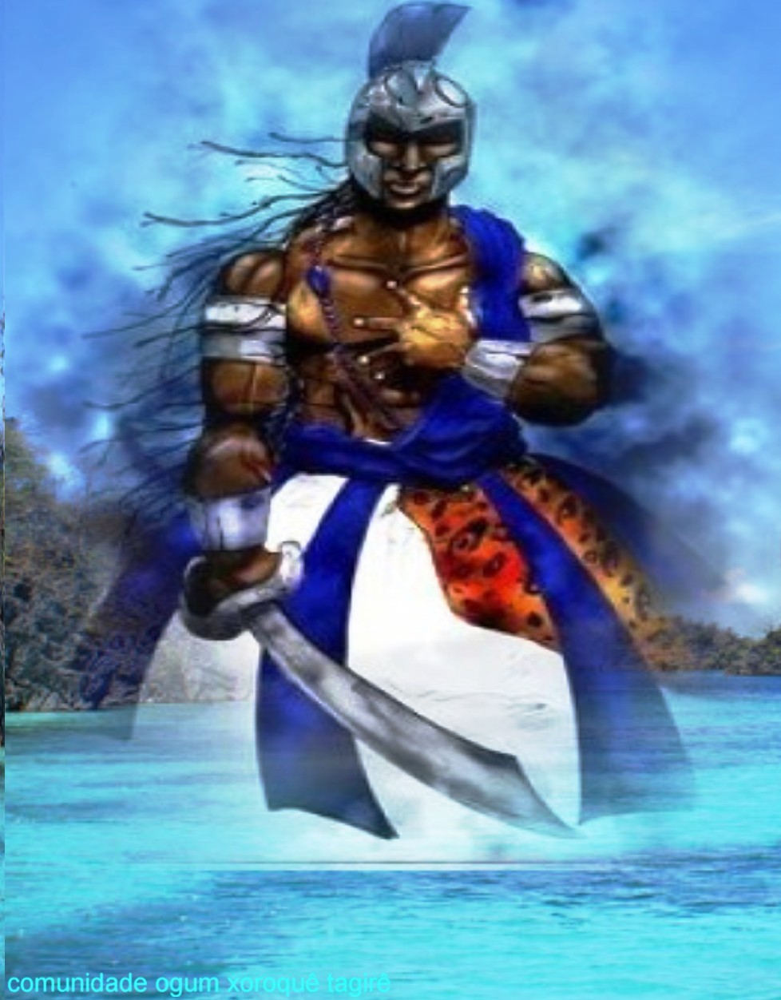
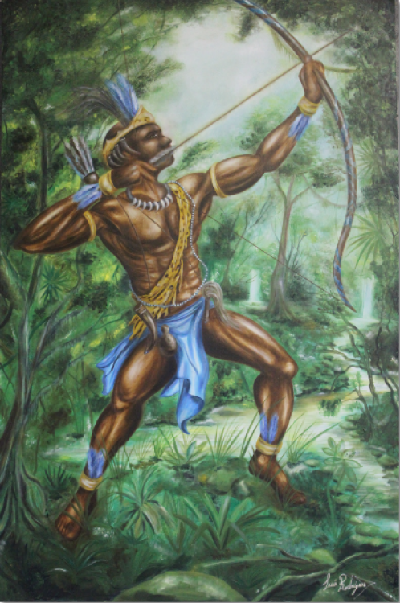
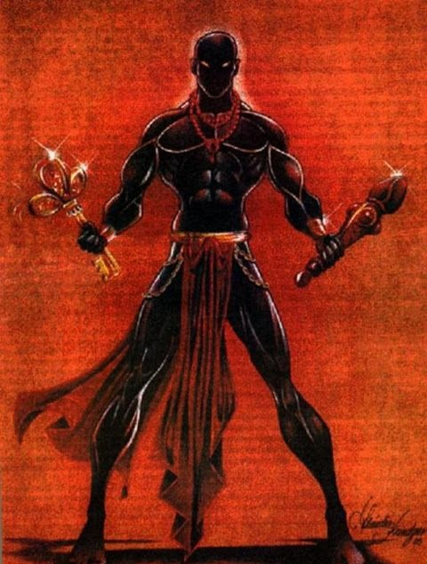
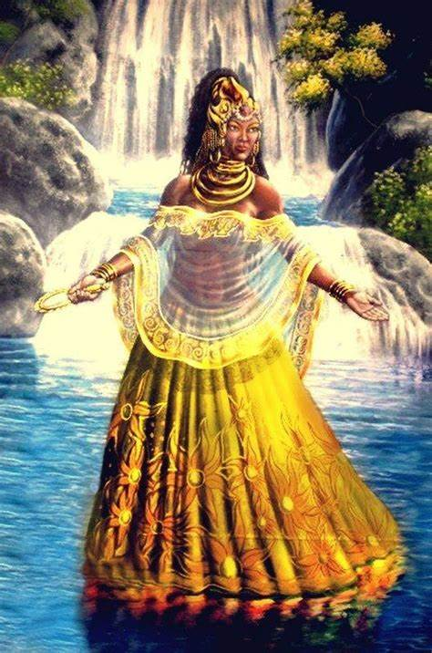
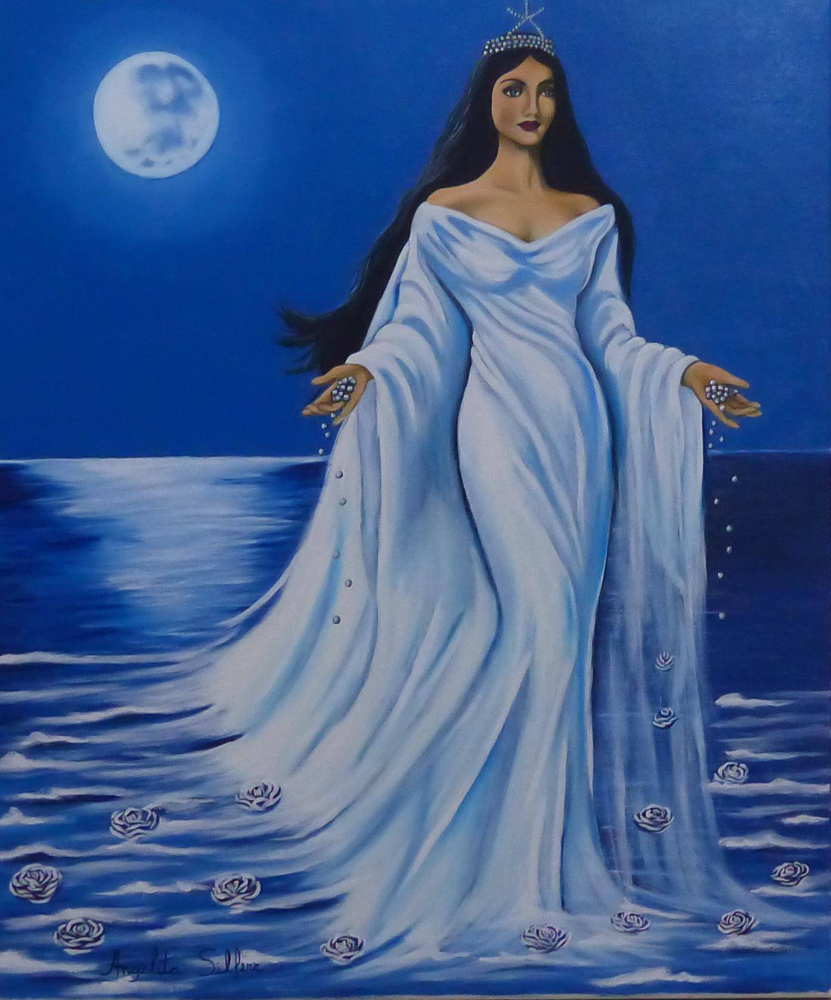
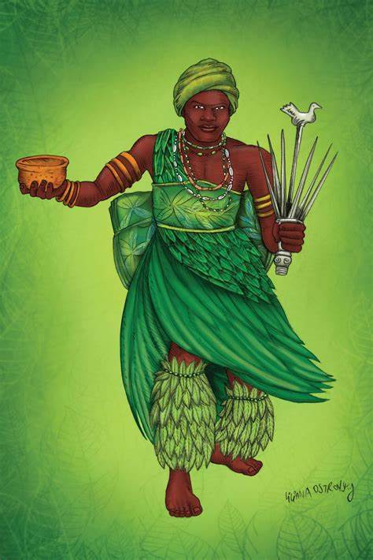
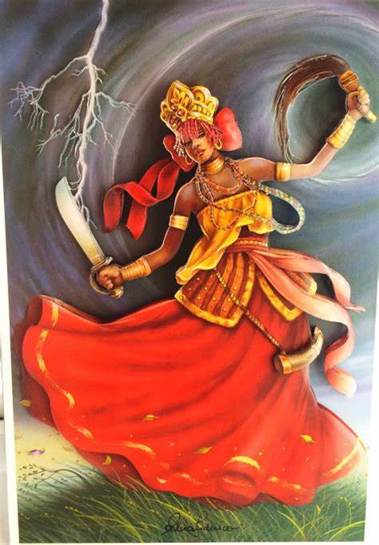
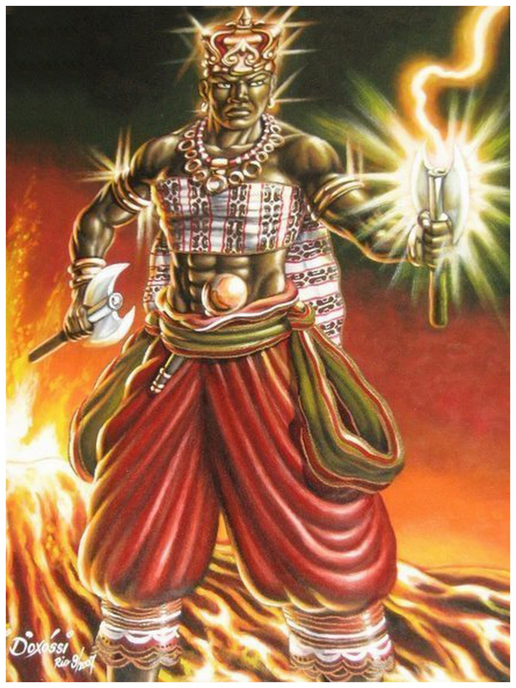
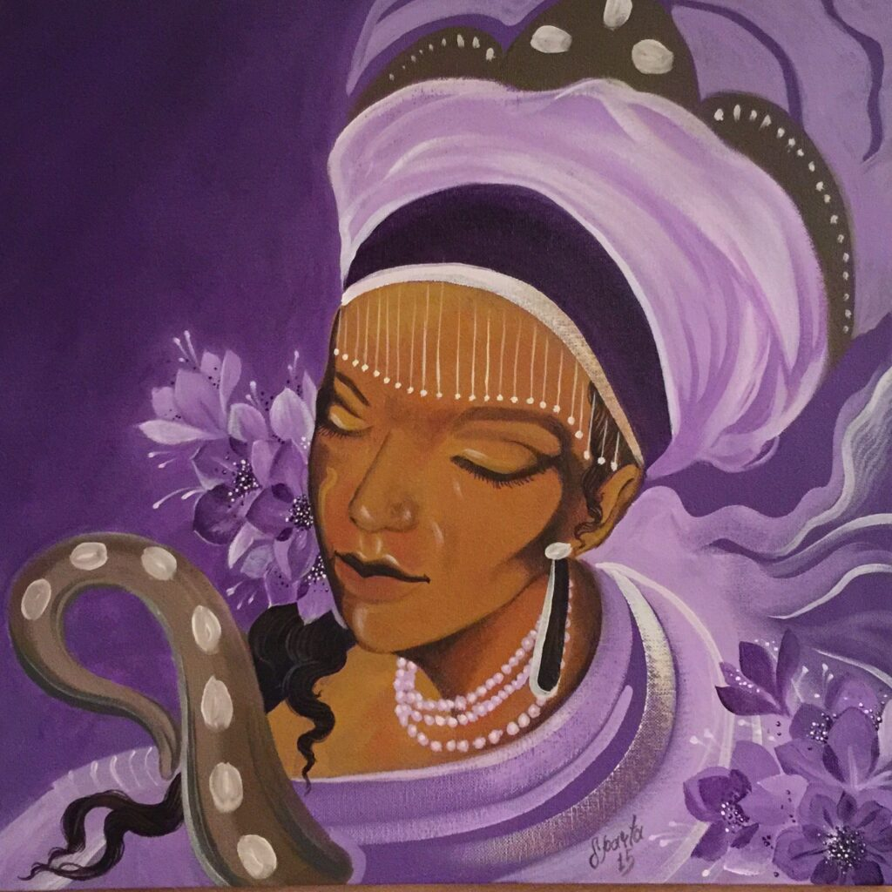
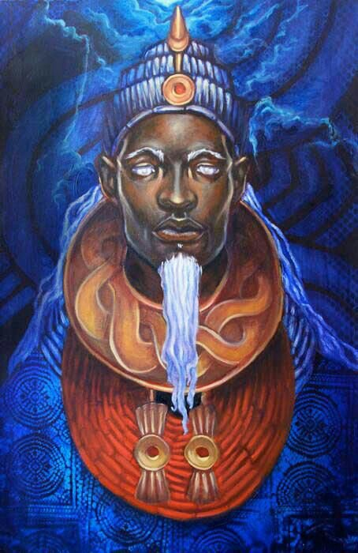

Principais Deuses
Oxalá

Oxalá, o Grande Orixá, é um deus muito importante no panteão iorubá, pois ele é o criador da humanidade. É também chamado de Obatalá, que significa Rei do Pano Branco. Além da cor branca, representa a pureza e o princípio de tudo.
Pai dos homens, criador da humanidade, Oxalá é o pai de todos. Muito sábio e benevolente com os filhos,
ele os leva pelos caminhos da vitória. Ele é regente do Trono da Fé, ou seja, está associado a todos os assuntos que
envolvam a Esperança e a Confiança em Deus.Ver mais
Ogum

Conhecido por suas conquistas e lutas, Ogum é um Orixá cultuado e muito respeitado pelas Religiões de origem Africana.
Aqui no Brasil, ele faz parte dos cultos da Umbanda e Candomblé, sendo também representado por São Jorge na Igreja Católica.
Por ser tão destemido e obstinado, esse Orixá nunca abandonou sua causa quando lutou por algum objetivo. Essas e outras características
fazem de Ogum um grande guerreiro, que além de lutar sabe comandar. Ver mais
Oxóssi

Orixá da mata, dos animais, do alimento em fartura e da caça, O Orixá Oxóssi é o responsável por prover as refeições de todos,
sempre afortunando os que o buscam. Seu conhecimento e seu modo de vida na natureza o torna um perfeito guerreiro e sábio. Ele está em sintonia
com o meio ambiente e é responsável por todo o balanço do eco sistema, até mesmo o cantar dos pássaros. Esse Orixá é defensor de todos aqueles que lutam
pelo seu sustento e de sua família.Ver mais
Exu

Também conhecido como Esu, Eshu, Bará, Ibarabo, Akésan, Yangí, Legbá e Ònan, Exú é o Orixá da comunicação, da paciência, da ordem, da disciplina e da sexualidade.
Com origem africana, Exú é uma das figuras mais populares do Candomblé e da Umbanda.
Ele é considerado o guardião das aldeias, cidades, casas e do Axé, e tem forte domínio sob o sexo, a magia, a união, o poder e o fogo da transformação.
Ver mais
Oxum

Oxum é o orixá dos rios e das fontes. É a deusa do rio Oxum, que fica no sudoeste da Nigéria, na África. Oxum é a deusa de todas as águas doces.
Uma das esposas de Xangô, é a divindade da beleza e do amor.
Ver mais
Iemanjá

Considerada a Rainha do Mar, Iemanjá é uma das divindades mais queridas da Umbanda e do Candomblé. Muito cultuada e respeitada, Iemanjá é tida
como a mãe de quase todos os Orixás. Sua representatividade está muito ligada à fecundidade – por isso foi destinado à ela o Mistério da Geração.
Ver mais
Ossain

Ossain é o pai das plantas sagradas e milagrosas. Possui o poder sobre qualquer tipo de vegetação e delas consegue extrair as curas de todos os males.
É o defensor da saúde e auxilia todos aqueles que buscam uma vida saudável.
Ver mais
Iansã

Iansã, Yansã ou Oyá é a Orixá dos fenômenos climáticos. Ela é a força dos ventos, o poder da natureza, e aquela que surge quando o céu se precipita
em água e ventania. É a garra, a independência e a força feminina.
Ver mais
Xangô

Fogo, trovões e raios. Xangô é um Orixá másculo, viril, agressivo, violento e justo. Ele atua em questões relacionadas à justiça kármica,
aquela que considera as ações das pessoas em todas as suas vidas e não somente nessa.
Ver mais
Nanã Buruquê

Nanã Buruquê, também chamada de mãe ou avó, é uma Orixá presente desde a criação da humanidade. Ela é a memória
do povo, pois vivenciou toda a magia da concepção do Universo.
Ver mais
Olokun

Sua vida é envolta em mistérios, não há muito o que dizer sobe Olokun, este Orixá carrega diversos segredos
como a profundeza do Oceano, onde ele faz a sua morada.
Na cultura africana, Olokun possui diferentes representações, em alguns locais ele possui características do
sexo masculino (Yorubá) e em outras, do feminino (Ifé). Mas em todas suas formas ele tem o corpo metade peixe e metade homem.
Ver mais